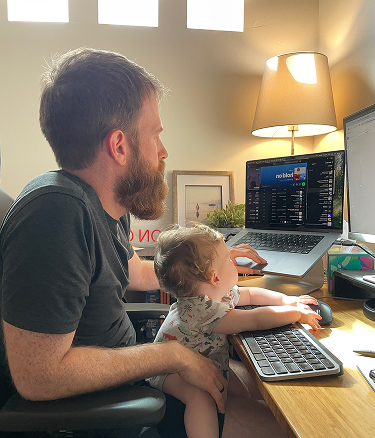
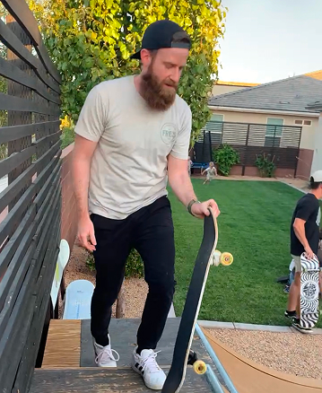
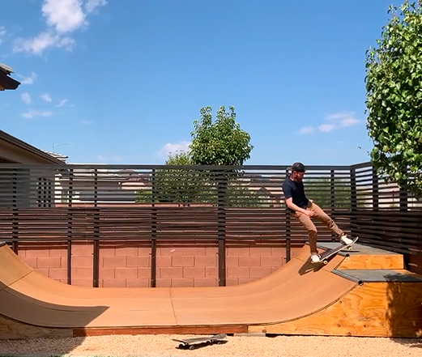
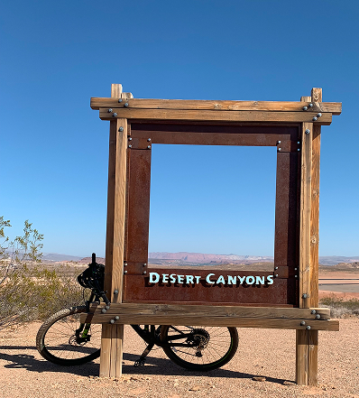
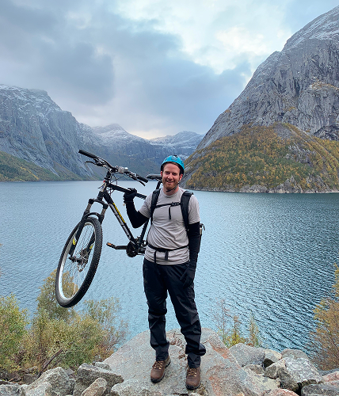
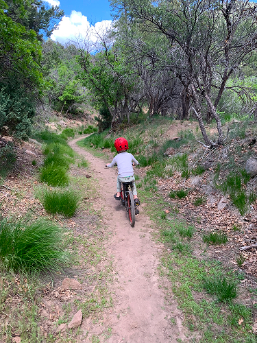
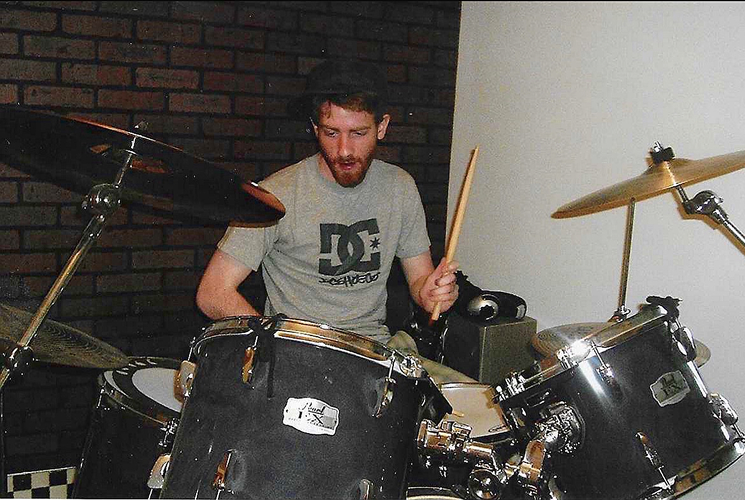
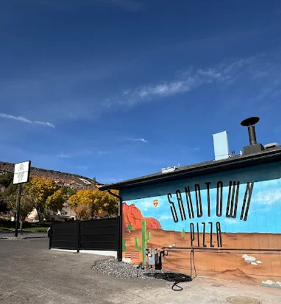

Work
I’m passionate about building products that provide remarkable value and delightful user experience.
I’ve been building digital products for over a decade, specializing in design and front-end engineering. I’ve worked on everything from native mobile apps to large-scale data platforms, always with a focus on great user experience. I love honing my craft and making pretty things, but the best part is building products that matter. Solve real problems for real humans, and hopefully spark a little joy.
Experience
Guides UX and UI engineering across the platform. Develops and maintains company’s design system and component library. Still in the trenches daily, designing UX and writing code.
Lead front end engineer and UX designer for a Greenfield web app. Conducted user research, designed, implemented, and iterated. CEO called it our “killer app”.
Developed several applications including a native iOS app, a crossplatform mobile app, and responsive web apps. Primary focus was on creating beautiful UI.
Designed websites, infographics, and other marketing materials. Created branding and style guide docs.
Education
Life
I live in sunny St. George with my wife and kids.
I like skateboarding, music, & mountain biking. I’m a big Brandon Sanderson and Baltimore Orioles fan. My wife and I love watching Survivor and eating at Sandtown Pizza.

- 
- 
- 
- 
- 
- 
- 
- 